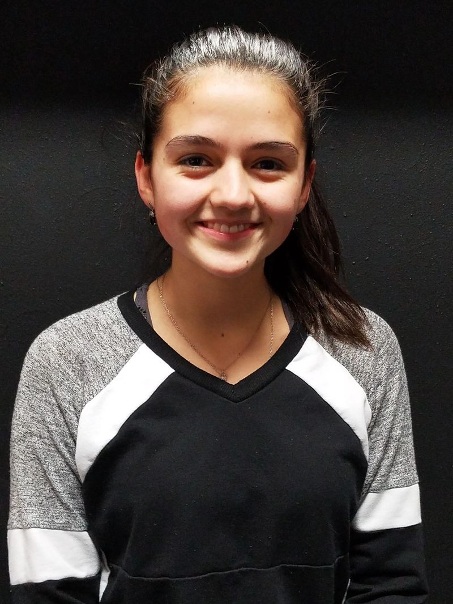

Miss Michelle is the Director of 5678 Dance! Studio which enrolls nearly 325 dancers and is in it's 17th season. She has over 30 years of dance experience in many dance styles. For the past 25+ years she has loved teaching dance to children ages 3-18 and adults. In 2005 she formed Rhythm! Dancers, a traveling group of older students who perform annually at many events including Six Flags, State Fair, the Milwaukee Bucks, Brewers, Wave and several local venues. Every other summer she takes Rhythm to New York City to take classes at Broadway Dance Center and experience "the city that never sleeps". She has had the pleasure to use her skills to collaborate with local organizations and several surrounding schools . She is so excited to continue working with previous dancers to further their abilities and can't wait to see new dancers in the studio as well!
Miss Abby
Miss Abby brings with her 10 plus years of dance training including Ballet, Tap, Jazz, Lyrical, Hip Hop, and Pom & Dance. Six of those years were at 5678 Dance! Studio training with several teachers. She was a member of Rhythm! Dancers for 5 years and was the group's secretary for one season and president for another. She has worked at the 5678 Dance! recital as our stage manager for many years and is well-versed in what it takes to put on an excellent show. She does many of our outreach programs including girl scout troops and school visits. Miss Abby has taught for the past 7 seasons here at 5678! Her high-energy personality and eye-catching choreography definitely make her classes fun!
Miss Nicky
Miss Nicky has studied Hip Hop right here at 5678 Dance! Studio for many years. She has been on our office staff as a studio secretary and has been an instructor for the past four years. She has worked at the recitals as a backstage manager not only for the years she has worked here but for several years prior as a volunteer. She took multicultural dance and African dance courses at the University of Wisconsin Milwaukee while she was pursuing her Bachelor’s degree in Early Childhood Education. Miss Nicky has worked with children for 9 years in both a school and daycare settings and is currently a 4K teacher. She is so excited to be back in the dance room again to teach even more classes this year!
Miss Whitney
Miss Whitney has been dancing since she was 6 years old and has developed a life long passion for the art of dance and theater. She has studied ballet, jazz, tap, lyrical, modern, and theatre for 22 years in 4 different states. She has been in many theatrical productions including “Pippin” and “Barnum”. Miss Whitney enjoyed being part of the dance teams at Bloomsburg University in Pennsylvania and at UW-Whitewater. She has been teaching dance for 14 years including many years here at 5678 Dance! Studio. She has continued her dance education through dance conventions and teacher workshops, which focus on developing classroom techniques and expanding choreography skills. Her students love her warm-hearted personality and her inspiring teaching style.
Miss Aubrey
Miss Aubrey has an extensive background within competitive dance while dancing for CenterStage studio in IL; she traveled across the US entering competitions at a National Level within Jazz, Hip Hop, Contemporary and Lyrical genres throughout her High School Career. Additionally, she was an active member of her High School Dance Team all four years. In college she pursued a minor in Dance Education at the University of WI Whitewater in which she studied contemporary and classical ballet. She was a member of the UWW Dance Team where she choreographed pieces for both the football and basketball season. This is Miss Aubrey's 5th year teaching here at 5678. She is excited to challenge her students and most of all to have fun and help each of her students find the passion within that she has always had for dance!

Miss Olivia
Miss Olivia has spent many years here at 5678 and we couldn't be happier to have her be teaching her own classes. She has danced here since she was 3 years old and has studied just about every style we offer. She is a member of our Rhythm! Dancers performance team and is the group's secretary. She has traveled to NYC with the group where she was able to take class and further her dance knowledge. As an assistant teacher over the past 2 years for the PreBallet class, Olivia has shared her kind-hearted, positive attitude and her incredible dance technique with many new dancers. She is thrilled to be teaching this summer and we know you'll love her just as much as we do!
Miss Hannay
Miss Hannah has many years of dance experience under her belt. She has taken Ballet, Tap, Jazz, Lyrical, Hip Hop, and Pointe classes here at 5678 Dance! Studio. She was a member of Rhythm! Dancers for 5 years and was the group's treasurer for two seasons. After leaving 5678 as a student, she has returned to volunteer at our recitals as a ticket taker, front table assistant, as well as helping with the finalé. She has also graduated from UW Oshkosh with a BS in Criminal Justice and a minor in Psychology. We are so happy to have her back here at 5678! She brings with her 5 years of cheerleading experience which she plans to incorporate into her poms routines. She’s so excited to work with all these young dancers and have an awesome year!
Miss Gracey
Miss Grace is thrilled to be joining our 5678 Dance! Studio staff. She started dancing when she was 3 years old. She also took Jazz classes here at 5678 for 8 years. Miss Grace may be a familiar face to you as she has returned each year to help at our recitals. At UW-Madison she danced in an organization called Optima Dance that performed a show at the end of each semester. She just graduated with her B.S. in Biology and is currently applying for medical school. You will love her strong dedication, fun and positive personality, and her amazing dance technique. Welcome Grace!
Miss Brittany
Miss Brittany is our front desk manager and is here to address any concerns you may have. Not only does she work here at 5678 but her two daughters take classes here as well! She enjoys getting a chance to watch her girls and all of our students grow through dance and loves the opportunity to interact with other dance families. Please feel free to ask her anything about payments, classes, teachers, the recital, dance wear needs or any question you may have.